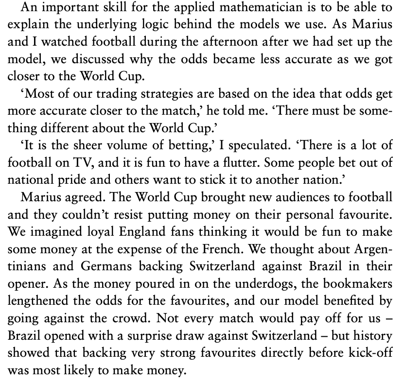

Note
Click here to download the full example code
Fitting the model
In this section we use odds from previous tournaments to fit the model to data. We do this using a method known as logistic regression. Let’s start by loading in the data.
The odds here are for two World Cups and two Euros. They are given in European form. Remember, the UK odds are found by taking away one from the European odds.
# Import the libraries we will use.
import pandas as pd
import matplotlib.pyplot as plt
import numpy as np
import statsmodels.api as sm
import statsmodels.formula.api as smf
# Load in the data
wc_load = pd.read_csv("../data/WorldCupEuroCupOdds.csv", delimiter=';')
wc_load = wc_load[(wc_load['Stage']==1) | (wc_load['Stage']==2)]
wc = wc_load.rename(columns={'FTHG': 'HomeGoals', 'FTAG': 'AwayGoals'})
# We start by looking at the closing odds
wc_df = wc[['AwayTeam','HomeTeam','HomeGoals','AwayGoals','PSH','PSD','PSA']].assign(goaldiff=wc['HomeGoals']-wc['AwayGoals'])
oddslabel='Closing odds'
Making the bookmakers odds fair
Bookmakers odds are set up so that they have a margin (an edge). If we calculate
where
are the (European) odds of each outcome – then we typically find a value greater than one (if it is one then the odds are fair). For more about making odds fair (and another method for correcting the odds for the margin) see here
To make the probabilities implied by the odds fair we thus divide each of the probabilites by \(t\). Now the probabilities of the three outcomes add up to one. This is done below, along with a change that allows us to work out values for the favourite.
def MakeOddsCalculations(wc_df):
# Calculate win, draw and lose for the outcomes.
wc_df = wc_df.assign(draw=(wc['HomeGoals']==wc['AwayGoals'])).assign(homewin=(wc['HomeGoals']>wc['AwayGoals']))
wc_df = wc_df.assign(awaywin=(wc['HomeGoals']<wc['AwayGoals']))
# Calculate fair odds.
totprob=1/wc_df['PSH']+1/wc_df['PSA']+1/wc_df['PSD']
wc_df = wc_df.assign(homeprob=1/wc_df['PSH']/totprob)
wc_df = wc_df.assign(awayprob=1/wc_df['PSA']/totprob)
wc_df = wc_df.assign(drawprob=1/wc_df['PSD']/totprob)
# Calculate in terms of favourite.
wc_df = wc_df.assign(favwin=((wc_df['homewin'] & (wc_df['homeprob']>wc_df['awayprob'])) | wc_df['awaywin'] & (wc_df['awayprob']>wc_df['homeprob'])))
wc_df = wc_df.assign(favprob=np.maximum(wc_df['homeprob'],wc_df['awayprob']))
return wc_df
wc_df = MakeOddsCalculations(wc_df)
Logistic regression
A logistic regression model has the following form
where \(z\) is a feature of the data and \(Y\) is the event to be predicted. In our case, \(Y\) is the event that the favourite wins. So, \(Y=1\) means the favourit wins, \(Y=0\) means they don’t (draw or underdog wins).
In the last:ref:section<oddsandprobs> section, we presented The Betting Equation as
where \(x\) are the fair odds for the favourite in UK form. These two equations are slightly different but related. What we need to do now is find a a way of calculating \(z\) from the data we have just loaded in and use it to estimate \(\alpha\) and \(\beta\).
The (fair) UK odds for the favourite is the ratio of the probability that the favourite doesn’t win and the probability that the favourite does win. That is
where \(p\) is the probability that the favourite wins. We now set
From this, we get
This is the same as the (1), with \(\alpha = \exp(b_0)\) and \(\beta = - b_1\).
Let’s calculate the log odds for our data.
# Create a variable which is log odds.
wc_df = wc_df.assign(favlog=np.log(wc_df['favprob']/(1-wc_df['favprob'])))
Now lets import tools required for a logistic regression model and use them to fit the parameters.
test_model = smf.glm(formula="favwin ~ favlog", data=wc_df, family=sm.families.Binomial()).fit()
print(test_model.summary())
b=test_model.params
alpha=np.exp(b[0])
beta=-b[1]
print('Estimate of alpha: ', alpha)
print('Estimate of beta: ',beta)
Generalized Linear Model Regression Results
=============================================================================================
Dep. Variable: ['favwin[False]', 'favwin[True]'] No. Observations: 283
Model: GLM Df Residuals: 281
Model Family: Binomial Df Model: 1
Link Function: Logit Scale: 1.0000
Method: IRLS Log-Likelihood: -180.75
Date: Sun, 13 Nov 2022 Deviance: 361.49
Time: 16:52:12 Pearson chi2: 283.
No. Iterations: 4 Pseudo R-squ. (CS): 0.1031
Covariance Type: nonrobust
==============================================================================
coef std err z P>|z| [0.025 0.975]
------------------------------------------------------------------------------
Intercept 0.1293 0.128 1.012 0.311 -0.121 0.380
favlog -1.2954 0.252 -5.131 0.000 -1.790 -0.801
==============================================================================
Estimate of alpha: 1.1380456338486287
Estimate of beta: 1.2954245420192907
We now have an estimate of our paramters \(\alpha\) and \(\beta\).
Plotting the predictions
Let’s plot the model and compare it to the data. Notice that we make the comparison as a difference between reality and outcome.
def FormatFigure(ax):
ax.spines["top"].set_visible(False)
ax.spines["right"].set_visible(False)
ax.set_ylim(-0.15, 0.15)
ax.set_xlim(0, 1.0)
ax.set_yticks(np.arange(-0.15, 0.16, 0.05), [str(x) + "%" for x in np.arange(-15, 16, 5)])
ax.set_xticks(np.arange(0, 1.01, 0.2), [str(x) + "%" for x in np.arange(0, 101, 20)])
ax.set_xlabel('Win probability implied by odds')
ax.set_ylabel('Actual win prob - dds win prob')
ax.legend()
ax.plot([0,1],[0,0],color='C0')
ax.set_title("Probability favourite wins")
return ax
#Favourite model
def PlotOddsData(ax,wc_df):
wins = wc_df['favwin']
winpreds = wc_df['favprob']
numbins=15
bin_means = np.zeros(numbins)
bin_counts = np.zeros(numbins)
bins=np.arange(0,1+1/numbins,1/numbins)
for i,lb in enumerate(bins[:-1]):
lbp1=bins[i+1]
dfs=wins[np.logical_and(winpreds>=lb,winpreds<lbp1)]
if len(dfs)>0:
bin_means[i]=np.mean(dfs)
bin_counts[i]=len(dfs)
ax.scatter(bins[1:]-1/(2*(numbins-1)),np.array(bin_means)-bins[1:]+1/(2*(numbins-1)), marker='o', s=bin_counts*2, label='%s (data)' % oddslabel)
return ax
p=np.arange(0.01,0.99,0.00001)
fig,ax=plt.subplots(1,1)
ax.plot(p,1/(1+alpha*np.power((1-p)/p,beta))-p, label=oddslabel)
ax = PlotOddsData(ax,wc_df)
ax = FormatFigure(ax)
plt.show()
These values caught my attention immediately when I first fit this model. The fact that both parameters, α and β, were bigger than 1 indicated that there was a (small) bias in the way the odds were set.
The plot above shows two ways in which we might have an edge Firstly, the right hand side of the plot shows that a long-shot bias exists against strong favourites. These teams are typically under-estimated by the bookmakers’ odds and therefore worth backing. The middle and left hand side of the plot shows that weaker favourites are over-estimated. This difference between odds and outcome is even more pronounced and seems to be where most of the value in the model is to be found.
Although these differences between predictions and model were small, Jan, Marius and I knew that they were big enough for us to make a profit…
Opening odds
We found a similar pattern in the opening odds as the closing odds, but the bias was smaller. We do this fitting below.
wc_df = wc[['AwayTeam','HomeTeam','HomeGoals','AwayGoals','Home Open','Draw Open','Away Open']].assign(goaldiff=wc['HomeGoals']-wc['AwayGoals'])
wc_df = wc_df.rename(columns={'Home Open': 'PSH', 'Away Open': 'PSA', 'Draw Open': 'PSD'})
oddslabel='Opening odds'
wc_df = MakeOddsCalculations(wc_df)
wc_df = wc_df.assign(favlog=np.log(wc_df['favprob']/(1-wc_df['favprob'])))
test_model = smf.glm(formula="favwin ~ favlog", data=wc_df, family=sm.families.Binomial()).fit()
print(test_model.summary())
b=test_model.params
alpha=np.exp(b[0])
beta=-b[1]
print('Estimate of alpha: ', alpha)
print('Estimate of beta: ',beta)
fig,ax=plt.subplots(1,1)
ax.plot(p,1/(1+alpha*np.power((1-p)/p,beta))-p, label=oddslabel)
ax = PlotOddsData(ax,wc_df)
ax = FormatFigure(ax)
plt.show()
Generalized Linear Model Regression Results
=============================================================================================
Dep. Variable: ['favwin[False]', 'favwin[True]'] No. Observations: 259
Model: GLM Df Residuals: 257
Model Family: Binomial Df Model: 1
Link Function: Logit Scale: 1.0000
Method: IRLS Log-Likelihood: -169.67
Date: Sun, 13 Nov 2022 Deviance: 339.33
Time: 16:52:12 Pearson chi2: 259.
No. Iterations: 4 Pseudo R-squ. (CS): 0.07218
Covariance Type: nonrobust
==============================================================================
coef std err z P>|z| [0.025 0.975]
------------------------------------------------------------------------------
Intercept 0.0365 0.131 0.280 0.780 -0.219 0.293
favlog -1.1051 0.267 -4.146 0.000 -1.627 -0.583
==============================================================================
Estimate of alpha: 1.0372197647675445
Estimate of beta: 1.105112298236666
As the big tournaments approach the odds reflect reality less! This is seen in values of α and β being closer to one for the opening odds than for the closing odds (above).
{kind=link}
Total running time of the script: ( 0 minutes 1.516 seconds)